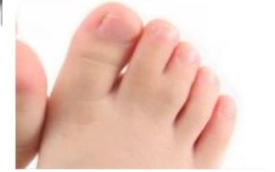
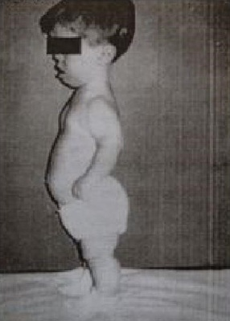
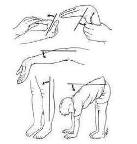

Questão 1 · Pé Torto Congênito · 4000131243O pé torto congênito é a deformidade ortopédica congênita mais frequente. Há relatos que vêm desde os tempos remotos. Dentre as opções de tratamento conservador, o método de Ponseti é correntemente utilizado, notadamente nas duas últimas décadas. Faz parte desse tipo de tratamento a tenotomia do;
A fibular curto.
B Aquiles.
C extensor longo do hálux.
D tibial anterior.
Questão 2 · Doença de Sever · 4000129757A apo site do calcâneo posterior é uma das doenças mais frequentes associadas ao excesso de atividade física, comum em ginastas, com pico entre 10 a 12 anos de idade. É conhecida como doença de:
A Séver.
B Köhler.
C Blount.
D Freiberg.
E Osgood-Schalter.
Questão 3 · Osteogênese Imperf eita · 4000117698Na forma mais grave da Osteogênese Imperfeita, todas as afirmações abaixo estão corretas, EXCETO:
A É também conhecida como doença de Vrolik.
B As escleras não são azuis.
C Pode encontrar a deformidade do tipo ""tórax em quilha"" (alargamento do diâmetro anteroposterior do tórax).
D Pode encontrar a deformidade do tipo ""rosto de duende"" (crânio irregular e aumentado contrastando com a face afilada).
E É comum ocorrer fraturas intra-útero.
Questão 4 · Acondroplasia · 4000062023Após o nascimento do seu primeiro lho, portador de acondroplasia, um pai procurou o aconselhamento de um geneticista. Não admitia a paternidade, pois havia sido informado de que a anomalia era de caráter dominante, e como nem ele nem sua esposa tivessem o problema, não entendia o que se passara. O geneticista explicou que:
A Trata-se de herança multifatorial e os pais podem não apresentar manifestações clínicas
B A doença é causada por uma mutação nova e a herança é autossômica dominante
C Trata-se de herança ligada ao sexo e a mãe portadora traz a doença para o filho
D O caso exigiria uma cariotipagem pois um dos pais teria que ser acondroplásico
Questão 5 · Sindactilia · 4000000897Observando a figura apresentada abaixo, responda qual alteração morfológica está presente.

A Polidactilia
B Geno valgo
C Sindactilia
D Pés em garra
Questão 6 · Mucopolissacaridoses · 4000061490Em qual Mucopolissacaridose (MPS) predomina a frouxidão ligamentar?
A MPS I (Hurler).
B MPS II (Hunter).
C MPS III (Sanfilippo).
D MPS IV (Morquio).
E MPS VI (Maroteaux-Lamy).
Questão 7 · Pé Plano · 4000114237A mãe de Pedro, 5 anos, procura avaliação médica preocupada porque o menino tem o pé plano. O menino é assintomático e no exame físico você encontra um sinal que está associado a evolução para pé plano doloroso. Este sinal é:
A A presença do arco plantar quando a criança está sentada, que desaparece em posição ortostática
B A hipermobilidade dos membros inferiores.
C A reconstrução do arco plantar com a elevação do polegar.
D O valgismo do retropé.
Questão 8 · Apresentação Clínica e Classif icação · 4000059503São manifestações clínicas extra-ósseas da Osteogênese Imperfeita, EXCETO:
A Escleras azuis (adelgaçamento das camadas da esclera)
B Malformações renais
C Surdez
D Defeitos dentários
E Hérnias inguinais e abdominais
Questão 9 · Medicina esportiva · 4000025512Em relação às diretrizes de estímulo à prática de exercícios físicos, assim como ao uso destes para a promoção da saúde e a prevenção e o tratamento de doenças, assinale a alternativa correta.
A Há contraindicação do treinamento resistido com pesos para idosos com lombalgia de caráter mecanopostural.
B Mulheres previamente sedentárias não deve ser estimuladas a iniciar exercício aeróbico durante a gestação. Entretanto, mulheres previamente treinadas podem manter treinamento aeróbico de intensidade leve a moderada.
C Adolescentes até 16 anos de não devem se envolver em treinamento resistido pelo risco de fechamento prematuro das epífises ósseas.
D O treinamento aeróbico, mas não o resistido, tem impacto positivo no colesterol sérico.
E Pacientes com dor em ombro relacionada aos esforços laborais devem ser estimulados a iniciar treinamento resistido progressivo de musculatura de manguito rotador, com enfoque na fase excêntrica do movimento.
Questão 10 · Acondroplasia · 4000127983Pré-escolar de 3 anos de idade é atendido em Ambulatório de Pediatria por apresentar baixa estatura. Na anamnese, a mãe refere que seu lho nunca teve problema algum de saúde, nasceu de parto a termo, cesariana por desproporção céfalo- pélvica com peso de 3.250 g, comprimento de 50 cm e perímetro cefálico de 39 cm. Negou quaisquer intercorrências no período neonatal, teve aleitamento materno exclusivo até o 6º mês de vida quando passou a receber alimentação complementar com papa de frutas e de legumes e atualmente aceita bem a comida da família no almoço e jantar, frutas + aleitamento materno. Recebeu 6 doses de vitamina A (megadose a cada 6 meses) e também sulfato ferroso no 6º mês até completar dois anos de idade. Vacinação: recebeu todas as vacinas recomendadas para sua idade. Higiene e desenvolvimento neuropsicomotor adequados para a idade. Ao exame físico, apresenta: Peso= 11 kg. Estatura = 87 cm, Perímetro Cefálico= 55 cm, Segmento Superior (SS) = 63 cm e Segmento inferior (SI) = 24 cm, SS/SI= 2,6 e Envergadura = 80 cm. Fácies com nariz chato, depressão da raiz nasal e fonte proeminente. Apresenta protrusão do abdome e das regiões glúteas e acentuação da lordose lombar. Com base nos dados de anamnese, qual a principal hipótese diagnóstica?
A Artogripose
B Osteogênese imperfeita
C Acondroplasia
D Osteocondrodistrofia
Questão 11 · Medicina esportiva · Doença de OsgoodSchlatter · 4000087834A prática da ginástica olímpica na adolescência aumenta o risco de qual(is) tipo(s) de lesão caracteristicamente?
A Apofisites como Osgood-Schlatter.
B Fratura da falange distal ou a ruptura do tendão extensor do dedo, levando ao chamado "dedo em martelo".
C Concussões e contusões de crânio.
D Priapismo ou impotência temporária.
E Hemólise intravascular por turbulência.
Questão 12 · Osteogênese Imperf eita · 4000079234Assinale a assertiva correta em relação à Osteogênese Imperfeita (OI).
A As fraturas geralmente ocorrem em ossos longos e sempre após o período neonatal devido à maior movimentação da criança.
B As fraturas, devido sua frequência e multiplicidade, não devem receber correção ortopédica.
C A presença de múltiplas fraturas isoladamente não sugere o diagnóstico de OI, devendo haver também alterações na esclera e dentes.
D O tratamento é baseado na suplementação de cálcio.
E O diagnóstico diferencial inclui, além de displasias ósseas, a síndrome de maus tratos.
Questão 13 · Medicina esportiva · 4000027138Lionel Messi, jogador de futebol argentino, não jogou defendendo a sua seleção pelas eliminatórias para a Copa do Mundo, em outubro passado, devido a fortes dores na virilha, que pioravam aos esforços. Feito diagnóstico clínico radiológico de osteíte púbica ou pubalgia, foi tratado e, após quase um mês, voltou às atividades. Um dos achados na imagem de ressonância magnética é a tendinose do reto abdominal e do:
A Grácil.
B Adutor longo.
C Adutor curto.
D Adutor magno.
Questão 14 · Diagnóstico · 4000073074Helen, seis meses, é internada por causa de uma fratura de fêmur. Tem tíbia e fêmur arqueados, macrocefalia e escleras azuladas. O diagnóstico mais provável de Helen é:
A Síndrome do bebê cinzento.
B Doença de Pompe.
C Osteogênese imperfeita.
D Fibrose cística.
Questão 15 · Pé Torto Congênito · 4000069028Atualmente, o método de Ponseti é o tratamento padrão do pé torto congênito. Assinale a alternativa correta quanto à sua aplicação.
A A primeira imobilização deve ser em supinação, para corrigir a queda do primeiro metatarsiano.
B O varismo deve ser corrigido inicialmente, manipulando o retropé em valgo.
C Todas as deformidades devem ser corrigidas simultaneamente e, desde o primeiro gesso, o pé deve ser levado a flexão dorsal.
D Nas primeiras trocas gessadas, o pé deve ser posicionado em rotação externa, valgo e em pronação.
E A primeira imobilização deve forçar o tálus em rotação externa e é seguida por imobilização com bota gessada.
Questão 16 · Tratamento · 4000062394A osteogênese imperfeita é uma patologia que, segundo se sabe, existe desde a mais remota antiguidade. A partir de 1895, recebeu o nome de Osteogenesis Imperfecta (em latim), que perdura até hoje. Trata-se de uma enfermidade genética causada pela falta de colágeno ou capacidade de produzi-lo, provocando grande fragilidade óssea. É conhecida popularmente como doença dos ossos de vidro e, para minimizar a dor e a incidência de fraturas, é adequada a utilização de:
A Noretisterona.
B Bifosfonatos.
C Clenbuterol.
D Alfaquimiotripsina.
Questão 17 · Apresentação Clínica e Classif icação · 4000045090Os pacientes com síndrome de Morquio apresentam inteligência normal, acentuada frouxidão ligamentar e displasia progressiva do quadril. Qual tipo de mucopolissacaridose caracteriza essa síndrome e qual é o seu defeito enzimático principal?
A Mucopolissacaridose tipo III e sulfato de Heparan.
B Mucopolissacaridose tipo IV e sulfato de Ceratan.
C Mucopolissacaridose tipo II e sulfato de Heparan.
D Mucopolissacaridose tipo I e sulfato de Ceratan.
Questão 18 · Hiperf rouxidão ligamentar · 4000019197Sobre a dor articular associada com a Síndrome da Hipermobilidade Articular, que assertiva é correta:
A A dor predomina no período noturno, por vezes, acordando a criança.
B A dor é pouco comum e, se ocorrer, dura de minutos a poucas horas.
C Somente ocorre em membros inferiores.
D É comum a dor persistir por mais de 3 meses.
E Provas de função reumática se alteram nos momentos de dor.
Questão 19 · Mucopolissacaridoses · 4000019032Sobre as Mucopolissacaridoses, não podemos afirmar:
A São doenças hereditárias do tecido conjuntivo.
B A manifestação clínica resulta da atividade deficiente de enzimas lisossômicas.
C A maioria dos pacientes apresentam grosseiros traços faciais ao nascimento.
D A prova de triagem mais comumente utilizada é o teste do azul de toluidina.
E Não há tratamento específico efetivo.
Questão 20 · Acondroplasia · 4000106627Observe a figura abaixo (VER IMAGEM). No aconselhamento para os pais desta criança, qual das seguintes a rmações é verdadeira?

A inteligência normal é esperada.
B O desenvolvimento motor ocorrerá sem atrasos.
C Válvula ventriculoperitonial para hidrocefalia será necessária.
D Ele, provavelmente, será infértil.
Questão 21 · Doença de Sever · 4000100994Sobre a epi site do calcâneo, ou doença de Sever, marcar C para as a rmativas Certas, E para as Erradas e, após, assinalar a alternativa que apresenta a sequência CORRETA: ( ) Ocorre mais comumente na faixa etária entre os nove e os 14 anos de idade, sendo muito rara sua ocorrência antes disso. ( ) É mais frequente em meninos e, na maioria das vezes, é unilateral. ( ) O diagnóstico é dado pelo achado patognomônico de esclerose da apófise do calcâneo no raio X de perfil.
A C - C - C.
B C - E - C.
C C - E - E.
D E - C - C.
E E - E - E.
Questão 22 · Acondroplasia · 4000092636A acondroplasia se caracteriza por:
A A inteligência é afetada na maioria dos casos.
B A circunferência da cabeça é normal.
C Pacientes portadores atingem em média 160 cm.
D Retardo do desenvolvimento, não caminhando independente antes dos 18-24 meses.
E O tratamento de escolha é o alongamento cirúrgico.
Questão 23 · Medicina esportiva · 4000080100Frustrada no sonho de se tornar campeã olímpica, uma ex-atleta divorciada não relutava em gastar boa parte do salário de frentista em puxados exercícios para "sua princesa" de 11 anos. Numa sessão de ginástica, por desatenção momentânea, a menina acidentou-se e precisou interromper os treinamentos. De modo corrente, os esportes se associam a lesões orgânicas de naturezas variadas e, dentre os seguintes pares, o que se revela inabitual e atípico é:
A Natação em provas de longa distância – hemólise intravascular.
B Basquetebol – ruptura do tendão extensor de dedos.
C Tênis de quadra – epicondilite medial.
D Vôlei – tendinite patelar.
Questão 24 · Mucopolissacaridoses · 4000046551As mucopolissacaridoses são um grupo de doenças neurometabólicas de caráter hereditário e progressivo causadas por mutações de genes que codificam enzimas que degradam os mucopolissarídeos. Dado esse contexto, qual exame inicial será útil para o diagnóstico desses grupos de enfermidades?
A Dosagem dos aminoácidos urinários e plasmáticos.
B Cromatografia urinária para os glicosaminoglicanos.
C Cromatografia urinária dos ácidos orgânicos.
D Pesquisa de ácidos lático e amônia plasmática.
E Cromatografia urinária de amônia.
Questão 25 · Critérios Diagnósticos · 4000121177As manobras do exame físico descritas abaixo e observadas em menino de seis anos, assintomático, são compatíveis com:

A hipermobilidade articular.
B artrite poliarticular.
C artrite oligoarticular.
D amplitude normal de movimentos.
E artrite episódica juvenil.
Questão 26 · Apresentação Clínica e Classif icação · Diagnóstico · 4000078834Helen, seis meses, é internada por causa de uma fratura de fêmur. Tem tíbia e fêmur arqueados, macrocefalia e escleras azuladas. O diagnóstico mais provável de Helen é: Respostas: 1 12 23
A síndrome do bebê cinzento.
B osteogênese imperfeita.
C doença de Pompe.
D fibrose cística.